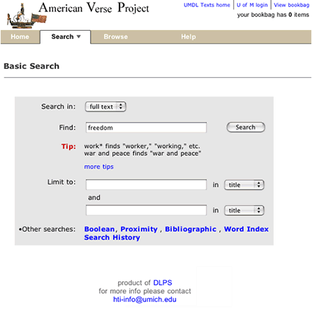
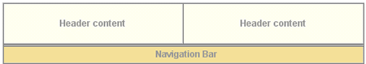

NOTE: This page begins with general information about how XML and XSL are used to deliver HTML in Release 12 of DLXS. Whenever examples or specifics are needed, the implementation for Text Class is used.
The user interface for Release 12 uses XSLT for transforming source XML to HTML for the web. The source XML is provided by .xml template files containing DLXS processing instructions that are processed on the fly by the middleware, and then transformed by a virtual XSLT stylesheet, also composed on the fly.
Release 12 XML template files differ from HTML template files in release 11 primarily in the sense that all final HTML markup has been moved into related XSL files, with the XML files generating only XML content to send to the XSLT processor. A host of debugging tools are available for diagnosing and customizing XML output and/or XSL template transformations to HTML. There is also a significant increase in the amount and availability of XML content to all XSL stylesheets for greater flexibility in controlling final output.
XML templates are used to deliver dynamic content from the CGI as well-formed XML to the XSLT processor. In general, the top level structure of XML templates mirrors that of the previous tpl template files, with an XML file for each major page scenario (search, results, header, text, etc.) Each XML template is a combination of static XML markup and processing instructions that are replaced by the cgi with XML compliant string values, or XML node fragments. In order to facilitate more flexibility and increased functionality to the XSLT process, a significant amount of additional data is provided as XML nodes to each processed XML template, including language specific reference tables, CGI, middleware and web environment variables, and references to all collection specific files.
Processing instruction tags are parsed and replaced by the middleware cgi. The resulting xml becomes the source tree for the XSLT processor. Processing instruction tags have a slightly different form in Release 12.
<?PI_IDENTIFIER_NAME [modifiername="value"]*?>
where all identifier names are preceded by a question mark and are represented in all capital letters with underscore characters. Zero or more modifier name/value pairs can be included to provide additional parameters. The tag is completed by a trailing question mark and a closing angle bracket. Here are two example PI tags surrounded by xml tags in the xml file:
<IncludeReturnToResults>
<?INCLUDE_RETURN_TO_RESULTS_XML?>
</IncludeReturnToResults>Can appear within multiple xml files. If there is a return to results link, the middleware supplies the href value within the IncludeReturnToResults tags. If there is no link, the xml delivered to the processor will contain only the empty tags. <CssLink>
<?CSS_PATH_XML filename="textclass.css"?>
</CssLink>Returns the appropriate contextual path to a collection-specific CSS file, named in the filename modifier (e.g., $DLXSROOT/c/coll/textclass-specific.css).
<IncludeGoToXcoll><?INCLUDE_GO_TO_XCOLL_XML?></IncludeGoToXcoll>The cgi returns the PI with a string, 'true' or 'false' (i.e., <IncludeGoToXcoll>true</IncludeGoToXcoll>). The XSL for this case then acts on a 'true' value to build a link to the cross-collection home page:
<xsl:if test="IncludeGoToXcoll = 'true'">Sometimes, instead, an <xsl:if> or <xsl:choose> is used in the XSL to test for the existence of a value in an element. If there, it is used, if not, nothing is done.
<td class="xcollnavcolor" align="center">
<span class="globnav">
... </xsl:if>
Each of the class-specific sections below describes the techniques that are applied within the class architecture to effect changes to overall class look and feel as it is expressed through the templates. It is important to note, however, that the class middleware supports the implementation of customized, collection-specific XML templates collection-specific XSL stylesheets, and optional, supplemental XML nodes. That is, in principle, the fallback mechanism utilized in release 11 and before is the same: when attempting to render a particular page utilizing a specific template, the middleware will first look for the required template in the collection-specific path--using a customized template if it exists--and, if not found there, processing the class version of the same template.
The relationship between XML templates and final HTML delivery is different in Release 12, and so the application of fallback is different; and in some places there is new fallback behavior not present in previous releases. The sections below describe in detail, using TextClass when examples are necessary, the new application of fallback and the techniques that can be applied to any templates to achieve differentiation in HTMl output.
In Release 12 page delivery is still modeled on class-level templates that are shared by all instances of the class and serve as default display for each page scenario. All default page templates are still based on the same general layout approach, which relies on tables for all general positioning, though Release 12 relies more heavily on associated CSS style definitions.
General layout (for TextClass) is shown in Figure 1, which shows top-level tables with borders showing, and using the color scheme for the Voltaire électronique collection. Each header and navigation cell also has a default CSS class value and default background image (the image is now specified in a CSS style definition for each header cell in textclass.css). For more on specifying individual collection appearance, see Specifying individual collection characteristics.
|
| Figure 1: top-level table structure of a typical page in Text Class |
Figure 2 shows the simple search page for the American Verse collection as it appears normally. Navigation bar labels, page text header markup (not header text content, e.g., "Basic Search"), instruction text and footer text are hard coded, and thus identical across all collections. All other content is specified per collection by processing instructions.
|  |
| Figure 2: Basic search page for American Verse in Text Class |
Release 11 .tpl template files combined processing instructions with hard-coded HTML markup that was processed in the CGI. In this approach, all the source markup in the Text Class schema was transformed to HTML with perl filters, usually in place of a PI in the .tpl file. Fallback was automatic in the sense that simply creating a template file of the same name in a separate directory would result in that file being pulled into the transformation for the designated page.
In Release 12, the HTML markup for delivery is embedded within XSL templates that transform the XML given directly in the xml files, or generated by the CGI from PIs filled in via XPat queries, database data, etc. The final process is an XSLT transform, involving one xml file and one xsl file. Those of you familiar with XSLT transformations know that xsl stylesheets can import other stylesheets and utilize the template rules from the imported stylesheet. This is part of a model of modularity inherent in the design of XSLT. However, by default, XSLT does not allow that the imported stylesheets be designated at XSLT transform run time: the paths have to be hard coded in the stylesheet. Many of the XSL stylesheets in Release 12 work together, just as if they were all part of a single styesheet compiled via import, but to enable fallback to work at the level of each stylesheet, we designate the dependent XSL stylesheets by name in the xml file. The middleware, then, compiles a virtual stylesheet for the XSLT transform process. An example from Text Class is shown below for the search page.
Building the search page begins with the search.xml template, shown here in full :
search.xml
<Top xmlns:dlxs="http://www.umdl.umich.edu/dlxs">
<!-- XSL fallback files -->
<XslFallbackFileList>
<Filename>bookbagitemsstring.xsl</Filename>
<Filename>search.xsl</Filename>
<Filename>htmlhead.xsl</Filename>
<Filename>navheader.xsl</Filename>
<Filename>footer.import.xsl</Filename>
<Filename>searchforms.xsl</Filename>
<Filename>xsl2htmlutils.xsl</Filename>
<Filename>globalvariables.xsl</Filename>
<Filename>headerutils.xsl</Filename>
</XslFallbackFileList>
<!-- Custom OPTIONAL XML for top-level file search.xml<2> -->
<CustomXml><?CHUNK filename="searchextra.xml" optional="1"?></CustomXml>
<SearchTips>
<Url><?SEARCH_TIPS_URL_XML?></Url>
<Show><?SHOW_SEARCH_TIPS_XML?></Show>
</SearchTips>
<?CHUNK filename="dlxspageglobals.xml"?>
<SearchType><?SEARCH_TYPE_XML?></SearchType>
<SearchNav>
<NavItem>
<Name>simple</Name>
<Tab>true</Tab>
<Link><?SIMPLE_SEARCH_LINK_XML testforrestrict="1"?></Link>
<Label>Basic</Label>
</NavItem>
<NavItem>
<Name>boolean</Name>
<Tab>true</Tab>
<Link><?BOOLEAN_SEARCH_LINK_XML testforrestrict="1"?></Link>
<Label>Boolean</Label>
</NavItem>
<NavItem>
<Name>proximity</Name>
<Tab>true</Tab>
<Link><?PROXIMITY_SEARCH_LINK_XML testforrestrict="1"?></Link>
<Label>Proximity</Label>
</NavItem>
<NavItem>
<Name>bib</Name>
<Tab>true</Tab>
<Link><?BIB_SEARCH_LINK_XML?></Link>
<Label>Bibliographic</Label>
</NavItem>
<NavItem>
<Name>wwstart</Name>
<Tab><?WW_NAV_XML?></Tab>
<Link><?WORDWHEEL_SEARCH_LINK_XML?></Link>
<Label>Word Index</Label>
</NavItem>
<NavItem>
<Name>history</Name>
<Tab>true</Tab>
<Link><?SEARCH_HISTORY_LINK_XML?></Link>
<Label>History</Label>
</NavItem>
</SearchNav>
<BookbagAddHref><?BOOKBAG_ADD_REMOVE_ITEM_XML?></BookbagAddHref>
<SearchRestriction>
<DocEncodingType><?DOC_ENCODING_TYPE_XML?></DocEncodingType>
<ItemHeader><?HEADER_XML?></ItemHeader>
</SearchRestriction>
<!-- this is for the HTML select element (pulldown) of all groups -->
<GroupsSelect><?GROUPS_SELECT_XML?></GroupsSelect>
<SearchForm>
<HiddenVars>
<?HIDDEN_REQUESTED_COLLECTIONS_XML?>
<?HIDDEN_XC_XML?>
<?HIDDEN_IDNO_XML?>
<?HIDDEN_BOOKBAG_XML?>
<?HIDDEN_G_XML?>
<?HIDDEN_XG_XML?>
<?HIDDEN_DEBUG_XML?>
</HiddenVars>
<SearchQuery>
<RegionSearchSelect><?REGION_SEARCH_SELECT_XML?></RegionSearchSelect>
<Region1SearchSelect><?REGION1_SEARCH_SELECT_XML?></Region1SearchSelect>
<Region2SearchSelect><?REGION2_SEARCH_SELECT_XML?></Region2SearchSelect>
<Region3SearchSelect><?REGION3_SEARCH_SELECT_XML?></Region3SearchSelect>
<Q1>
<?Q1_INPUT_XML?>
</Q1>
<Op2><?OP2_SELECT_XML?></Op2>
<Q2><?Q2_INPUT_XML?></Q2>
<Amt2><?AMT2_SELECT_XML?></Amt2>
<Op3><?OP3_SELECT_XML?></Op3>
<Q3><?Q3_INPUT_XML?></Q3>
<Amt3><?AMT3_SELECT_XML?></Amt3>
</SearchQuery>
<CiteRestrictions>
<Cite>
<Input><?CITE1_INPUT_XML?></Input>
<Restrict><?CITE1_RESTRICT_SELECT_XML?></Restrict>
</Cite>
<Cite>
<Input><?CITE2_INPUT_XML?></Input>
<Restrict><?CITE2_RESTRICT_SELECT_XML?></Restrict>
</Cite>
</CiteRestrictions>
<OtherRestrictions>
<!-- Begin collection specific restrictions -->
<GenreSelect>
<?GENRE_SEARCH_SELECT_XML?>
</GenreSelect>
<GenderSelect>
<?GENDER_SEARCH_SELECT_XML?>
</GenderSelect>
<PeriodSelect>
<?PERIOD_SEARCH_SELECT_XML?>
</PeriodSelect>
<PubBetweenSelect>
<?PUB_BETWEEN_SEARCH_SELECT_XML?>
</PubBetweenSelect>
</OtherRestrictions>
</SearchForm>
<CollCheckboxList>
<?COLL_LIST_WITH_CHECKBOXES_XML?>
</CollCheckboxList>
</Top>
|
NOTE: Very important is the XslFallbackFileList node at the top. Each child Filename node indicates an xsl file--each found via fallback--that is required to transform the source tree xml that will result when all the PIs are resolved. The middleware will acquire the paths to each xsl file named, and compile a single virtual stylesheet in memory, as shown below:
Virtual transform stylesheet to be used for search.xml
<?xml version="1.0" encoding="UTF-8" ?> <xsl:stylesheet version="1.0" xmlns:xsl="http://www.w3.org/1999/XSL/Transform" xmlns:dlxs="http://dlxs.org"> <!-- transform.xml is processed by the middleware into an internally referenced XSL stylesheet. This allows fallback processing of the stylesheets imported into the top-level stylesheet. The top-level stylesheet is normally specified by the <?xml-stylesheet type="text/xsl" href="somestylesheet.xsl"?> processing instruction (PI) in the top-level XML file. In the absence of that PI, an XML XslFallbackFileList node must be present in the top-level XML file to list the XSL files which should appear in XSL import statements to replace the XSL_FALLBACK_FILE_LIST PI below. --> <xsl:import href="/l1/web/t/text/bookbagitemsstring.xsl"/> <xsl:import href="/l1/web/t/text/search.xsl"/> <xsl:import href="/l1/web/t/text/htmlhead.xsl"/> <xsl:import href="/l1/web/b/bldemo/navheader.xsl"/> <xsl:import href="/l1/web/t/text/footer.import.xsl"/> <xsl:import href="/l1/web/t/text/searchforms.xsl"/> <xsl:import href="/l1/web/lib/xsl2htmlutils.xsl"/> <xsl:import href="/l1/web/t/text/globalvariables.xsl"/> <xsl:import href="/l1/web/t/text/headerutils.xsl"/> <xsl:output method="html" indent="yes" encoding="utf-8" media-type="text/html" doctype-public="-//W3C//DTD XHTML 1.0 Transitional//EN"/> </xsl:stylesheet> |
Note that in this case, for the collection with collid bldemo there is a collection-specific copy of navheader.xsl in /l1/web/b/bldemo/. All other files are taken from class directories. (More on the breakdown of xsl and xml files later in this document.)
Fallback is also operating in the resolution of all CHUNK PIs, as in previous releases. In particular in this example are
<CustomXml><?CHUNK filename="searchextra.xml" optional="1"?></CustomXml>
and
<?CHUNK filename="dlxspageglobals.xml"?>
The first example will insert into search.xml the contents of a searchextra.xml file from the current collection specific directory (e.g., /l1/web/b/bldemo) if it exists, but simply remove the PI if it does not exist. This mechanism allows for the addition of specific XML content, per collection, that is relevant to the search page.
The second example causes the middleware to insert the dlxspageglobals.xml file into search.xml. dlxspageglobals.xml itself references xml for each page header (navheader.xml), footer (footer.import.xml) and a set of global level nodes wrapped in a <DlxsGlobals> node that provide a variety of reference data to facilitate many of the templates in dependent XSL pages.
Note that fallback allows for multiple levels of CHUNK lookups in xml files, which are all processed in sequence into a single source tree.
Fallback is not exercised, however, in the xsl files referenced in the virtual stylesheet. The reason is primarily to make it easier to test XSL transformations "off line" simply by saving the compiled stylesheet and its import sheets separately, to transform in a local debugger. This approach will also provide for eventual client side xsl transformation, when the virtual stylesheet can simply be written to disc and referenced in the xml file sent directly to the user's browser.
Finally, incorporating fallback into the mechanism here interrupts to some
degree the facility of importing and either overriding or augmenting template
rules from one XSL stylesheet to another. Becaue none of the stylesheets
in the virtual stylesheet actually imports another, it is not possible to
utilize the apply-imports element. Also, template
rules that are identical to the processor--that match the same node--will be
executed in reverse occurrence order: the last valid template takes precedence.
That effectively means that when two xsl files named in Filename nodes
within a single xml file contain identical, or equally valid, template rules
for the same source node, the template rule in the last named xsl file will
be applied.
The final core component in Release 12 is the array of XSL stylesheets that provide all the template rules for the XSLT tranform process. The stylesheets are where most of the individual collection customizations will be handled. DLXS middleware for Release 12 is built around the libxslt processor. The stylesheets are all XSLT version 1.0, with several utilizing EXSLT extensions (see exslt.org for more on EXSLT).
Annotated lists of stylesheets:
See also a table of Text Class xsl file dependencies by xml filename as an overview of the structure of xsl and a guide for customizing changes. This information can also be discovered by looking at the Fallback File List of any XML document along with import statements within the relevant XSL.
To effect collection-specific changes that involve significant re-arrangement of page components, alternative filtering of source nodes, or changes in language labels in the interface, you can create collection specific XML templates or XSL stylesheets, or both, or you can create local language map xml files. Each approach is discussed in the following examples.
Refer to the above code sample from Text Class's search.xml. All the possible variations for a search form, including restrictions by title / author / citation or genre, date, etc, are included in xml nodes in search.xml and handled conditionally in the xsl depending on current searchtype and collection. For a single collection in Text Class, an optional restriction is by genre. In the xml template, this is reflected in the node:
<GenreSelect> <?GENRE_SEARCH_SELECT_XML?> </GenreSelect>
When the xml template is processed, the <?GENRE_SEARCH_SELECT_XML?> PI
is replaced by a node set for building the form select element called 'singlegenre'
<GenreSelect> <Option> <Label>All</Label> <Value>All</Value> <Focus>true</Focus> </Option> <Option> <Label>Prose Fiction</Label> <Value>FICT</Value> </Option> <Option> <Label>Prose Non-fiction</Label> <Value>NONFICT</Value> </Option> <Option> <Label>Drama</Label> <Value>PLAY</Value> </Option> <Option> <Label>Poetry</Label> <Value>POEM</Value> </Option> <Name>singlegenre</Name> <Default>All</Default> </GenreSelect> |
By default, when searchforms.xsl processes a GenreSelect element, it builds a form select element with the label 'Restrict to genre', as seen in figure 3.
| Figure 3 |
The label 'Restrict to genre,' is, like all language strings in the interface, stored in a langmap.en.xml file and referenced by an XSL key() function, as in
<span class="formfont"><xsl:value-of select="key('get-lookup','searchforms.str.19')"/></span>
The key reference above, retrieves the value, in langmap.en.xml, of the following node:
<Item key="searchforms.str.19">Restrict to genre:</Item>
But a different collection may have the singlegenre field mapped to language,
instead of traditional literary genre categories, in which case the label should
say 'Restrict to language' instead. Substituting language mappings in Release
12 is done by creating a local langmapextra.en.xml file in the
collection directory. For this collection, if this were the only language
substitution for the entire collection, the contents of the langmapextra.en.xml
file would be ...
<ColLookupTables>
<Lookup id="searchforms">
<Item key="searchforms.str.19">Restrict to language:</Item>
</Lookup>
</ColLookupTables>
When search.xml is invoked for the specific collection, the contents of the langmapextra.en.xml
file will be inserted just before the class langmap.en.xml
file. Because the key() function is being used in a single node context,
it will return only the first match it makes, the substituted text.
Just as collection-specific information or behavior can be added, class level
information or behavior can be removed. In the Text Class search form, for
example, the cgi provides node sets for
only those elements in the <SearchForm> node (see search.xml
sample above) that are relevant to the current search, and the xsl template
rules are invoked depending on search type. The exception
to this, however, is the <CiteRestrictions> node, included
for the portion of the non-bibliographic search forms that allows bibliographic
restrictions. This node may be populated even if the collection doesn't
provide the functionality. If this is the case, add a local version of
the searchforms.xsl file to the collection directory, and remove those
xsl templates that build the fields.
There are a variety of reasons why you might want to substitute / replace specific xsl template rules for a particular collection. Two obvious possible scenarios are 1) to make a more significant structural change to a page header and 2) to process source content nodes (e.g., notes or heads) differently in the full text display.
Scenario 1 is easy. The change to the header can most likely be effected by altering the templates in navheader.xsl. Simply creating a local version of this file in the collection directory will result in it being referenced by fallback each time a page for that collection in invoked. No other file substitutions are necessary.
Scenario 2 can be done with multiple approaches. Imagine, for example, that a Text Class collection has slightly different data for a text element that either needs to account for the occurrence of specific data or output similar data differently (an example, might be an L element in poems). The text.components.xsl file has a template rule for the L node. You could simply copy the text.components.xsl file from the class directory and make a change only in that single template rule, leaving all other rules the same. The fallback mechanism would cause text.xml to include the collection version of text.components.xsl and apply its specific template rule for that node.
Better, though, would be to substitute only a single xsl template rule (i.e., just the rule for the L node). If there was no fallback mechanism, text.xml would instead reference a single text.xsl, which could use the xsl:import element and thus exploit the import inheritance rules of xslt. By those rules, text.xsl could import text.components.xsl, which would give it access to all the templates in that stylesheet, and add a local substitute template for any of the imported templates, thus overriding the 'default' behavior of the imported template with the local behavior. You can exploit this inheritance capability within the fallback framework. To do so in the Text Class text filtering scenario illustrated here would require the following changes:
<xsl:import href="../../t/text/text.components.xsl"/>
There is a short cut to this procedure that can accomplish the same results for most cases. Simply copy the class text.xsl file to the collection directory and add the substitute template to it. You also should make sure, though, that the the Filename node for text.xsl comes after the node for text.components.xsl in text.xml. The reason for this is that when an xslt processor finds two equally valid template rules for a single node, it executes the last rule found (very similarly to the cascade rule of precedence in CSS).
There are, of course, other variations on these approaches to template substitution; you can exploit fallback to invoke any number of alternative xsl inclusions.
Much of the framework for specifying collection look and feel in earlier releases
is retained in Release 12. That is, the main header portion of the page, previously
included through a navheader.chnk file, is now compiled from a navheader.xml
file and navheader.xsl file.The same framework for CSS style modification is
also retained, which will apply to almost any font, spacing, or color characteristic
of common HTML elements in the result tree. The main change in Release 12 in
this regard is the inclusion of graphics files: there no longer is a PI to
build paths to specifically indicated graphic filenames. All references to
common graphics in Release 12 hard-coded to the class graphics directory in
XSL templates. To include collection specific graphics will require changing
an XSL template rule for that collection (see above). Techniques for
CSS and header options are detailed in the following sections.
Using Text Class again as an example, templates utilize two CSS files for
controlling most font and color characteristics: textclass.css and textclass-specific.css.
textclass.css is stored in at the $DLXSROOT/web/t/text/ path
and contains all the default style declarations. textclass-specific.css is
created for each individual collection and stored at the $DLXSROOT/web/c/coll/ path.
Reference paths to both stylesheets are now included as node values within
the DlxsGlobals node to each page ...
..and the link elements to the files are constructed in the htmlhead.xsl stylesheet.
<CssLink>/t/text/textclass.css</CssLink>
<CssLink>/c/collection/textclass-specific.css</CssLink>
Because textclass-specific.css is referenced after textclass.css, any style declarations that appear in textclass-specific.css will effectively overwrite matching declarations in textclass.css. This is how fonts and background colors are varied for each collection. (full text of textclass.css)
When creating a local look and feel with textclass-specific.css, you replace
those CSS style rules that affect portions of the page header (or any other
styles) so that they will override, for that collection, the class leve styles.
Refer to this guide
to header css styles for more details on creating the textclass-specific.css
file.
In Text Class, the header of each page template includes the area in the top 75 pixels of the page containing those elements associated with unique collection identity: main collection title, global links, if any, and the main navigation bar. As of Release 12, all header and navigation components are built primarily by the navheader.xml, navheader.xsl, and navbarutils.xsl files, which are incorporated into each of the main functional template files. The relationship between a main template file (e.g., reslist.xml) and navheader.xsl is illustrated in Figure 4 below.
|  navheader |
 [anytemplate].xsl |
| Figure 4 : Template layout showing division between main template content and the navheader . |